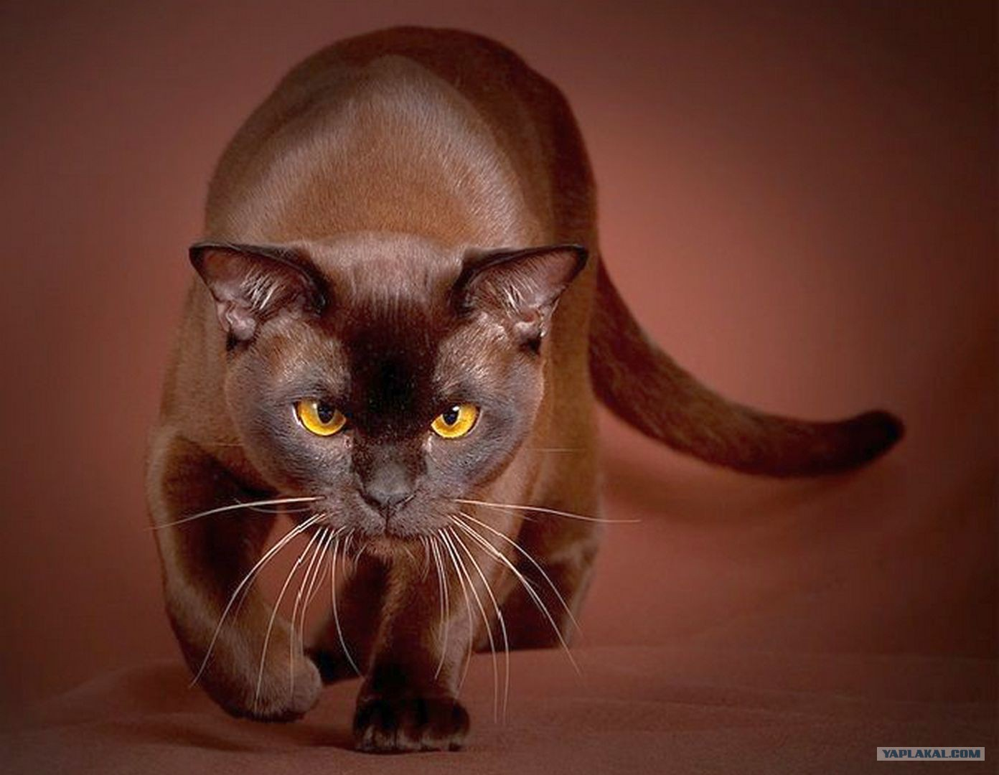
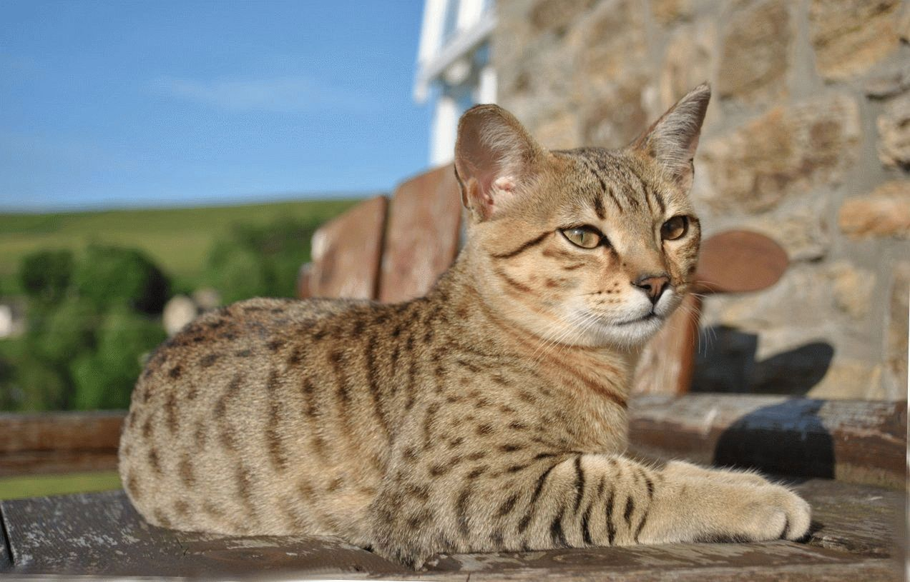
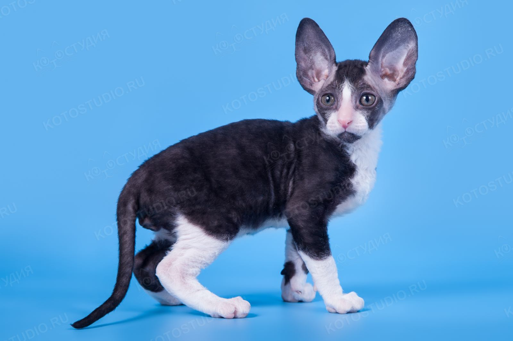
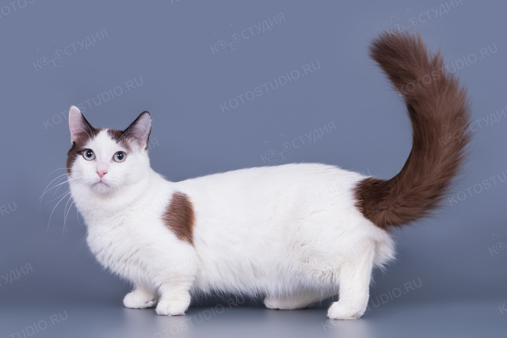
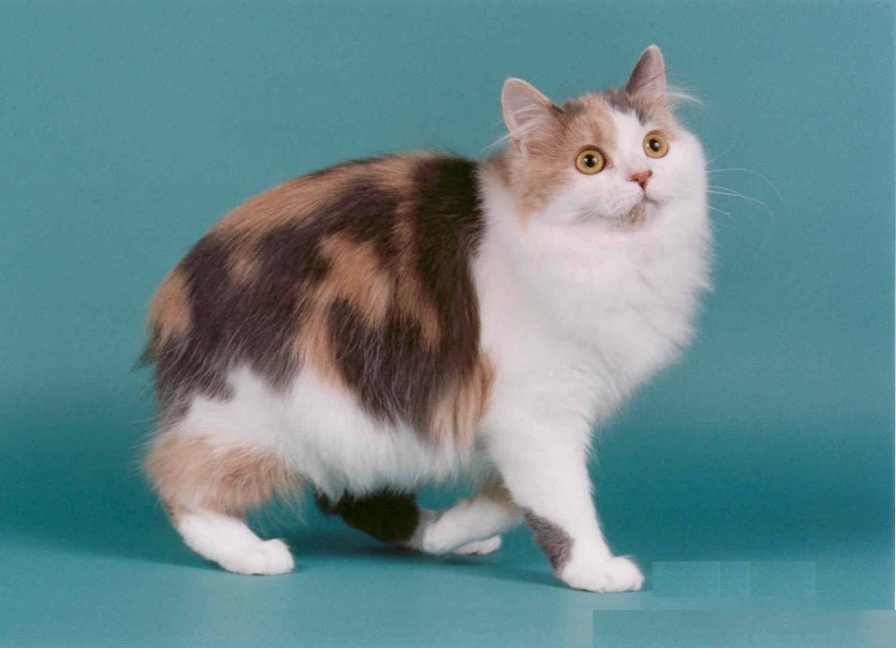
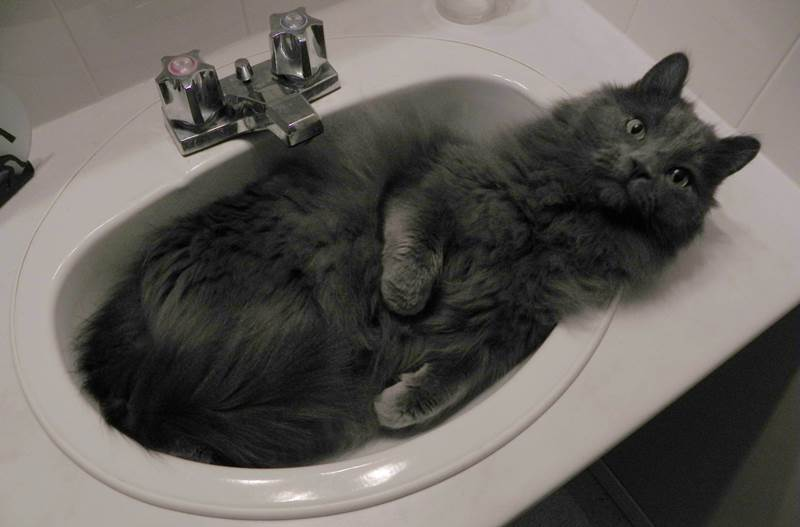

Возраст:
⇓1мес ⇔ 3года ⇑
Порода:

Балтазар
Возраст: 1 год
Порода: Бурма
Болезни: Нет
Статус: ищет хозяина
Энергичный темперамент кошек позволяет им сохранять озорное и подвижное
поведение котят даже во взрослом возрасте. Чуткие и внимательные, они
прекрасно чувствуют настроение своего хозяина, поэтому не станут докучать
своими играми, если хозяин не в настроении. Кошки ласковые, добрые,
деликатные, умные и сообразительные бурманцы легко усваивают правила
поведения. Прекрасно ладят с детьми, готовы стойко переносить любые
проявления детской ласки. Обладая высоким интеллектом и активным
темпераментом в общении с другими домашними питомцами легко занимают
позицию лидера, будут стараться отстаивать свой авторитет.

Граучо
Возраст: около 3 месяцев
Порода: Египетская мау
Болезни: Нет
Статус: ищет хозяина
Эти кошки обожают быть в центре внимания, ведь их красота требует всеобщего
почитания и одобрения. Игнорировать египетских мау невозможно, на них хочется
смотреть, любоваться грацией, красотой, элегантностью. Они любят общаться
с хозяином, имеют приятный на слух голос, их милое мурлыканье можно слушать
бесконечно. При своей утонченности и грациозности они все же озорные и
игривые, любят прогулки на свежем воздухе и тратят немало энергии на
подвижные игры и забавы.

Дункан
Возраст: 3 года
Порода: Британец
Болезни: Нет
Статус: ищет хозяина
Действительно утонченный и величественный вид этих кошек наталкивает на мысль
о царских манерах и надменности этих животных, но внешность обманчива, корниши
очень милые и общительные кошки. Они обожают своих хозяев и не прочь поиграть как
маленькие котята даже во взрослом возрасте. Обладая хрупкой внешностью, они
довольно сильные и мышечно развитые животные, умеют высоко прыгать, быстро бегать,
ведут себя достаточно активно. Подобно собакам они любят ловить предметы, приносить
их обратно хозяину и даже бросать их самостоятельно, используя передние лапы,
похожие на руки человека, благодаря своим длинным подушечкам.

Итси
Возраст: около 2 месяцев
Порода: Манчкин
Болезни: Нет
Статус: ищет хозяина
Манчкины очень активные кошки, любят лазить по диванам, кроватям, столам и шкафам.
Они сообразительные и дружелюбные, легко находят язык с собаками и другими
домашними животными. Достаточно уверенны в себе, отстаивают свои интересы.
Обладая лидерскими качествами часто несут доминирующие роли в общении с
другими питомцами. Легко адаптируются к разным условиям и не привередливы.
Однако лучше не держать манкчина на улице, ему будет комфортнее и безопаснее
жить в квартире или в доме. Дома они нуждаются в общении с хозяином, любят быть в
центре внимания, плохо переносят одиночество.

Ками
Возраст: 1 год
Порода: Мэнкс
Болезни: Нет
Статус: ищет хозяина
По характеру кошки породы Мэнкс очень дружелюбны, они общительны, нежные и
обаятельные. Им характерна легкая игривость. Они очень ласковы, легко уживаются
в семье, быстро находят общий язык с другими домашними животными. По крайней
мере, если люди дружелюбно ведут себя по отношении к ним. С помощью сильных
задних лап мэнксы утоляют свою любознательность, исследуя самые высокие места
в доме. Кроме этого, кошки очень любят ласку, им нравится, когда их нежно гладят
по шерсти, когда обращают на них внимание. Беcхвостые питомцы послушны и спокойны.

Лаки
Возраст: 3 года
Порода: Нибелунг
Болезни: Нет
Статус: ищет хозяина
Характер у кошек спокойный, правда они не быстро идут на контакт с незнакомыми
людьми. Предпочитают осмотреться в новых обстоятельствах, плохо переносят перемены
в обстановке. Преданные и любящие создания, как правило, выбирают себе одного
главного среди всех членов семьи, с кем устанавливают самые близкие и
доверительные отношения. Тяжело переживают разлуку с любимым хозяином.
Спокойный характер является залогом того, что они не навязчивы и не станут
беспокоить Вас по пустякам, часто им просто требуется Ваше присутствие рядом.
Они будут мирно сидеть подле Вас, пока Вы чем-то заняты.